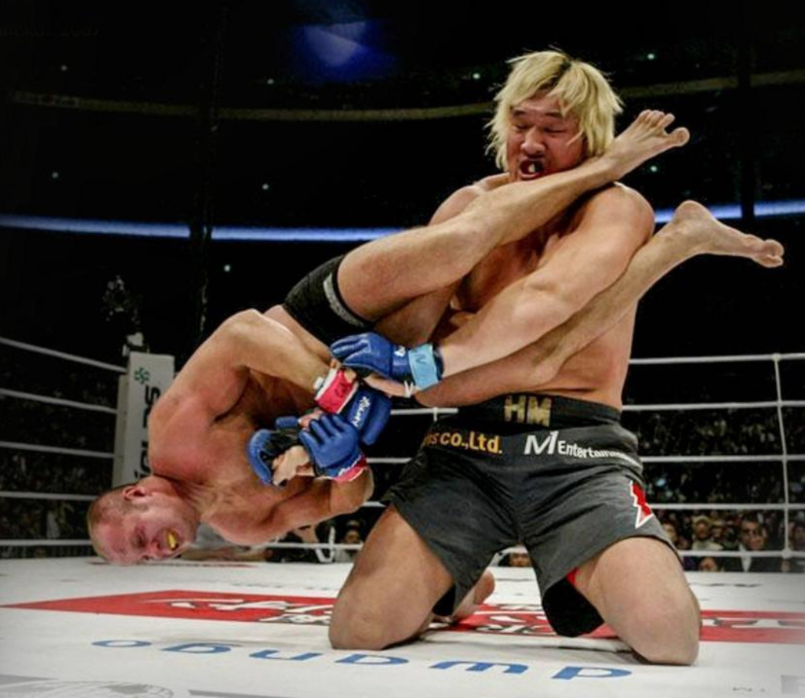
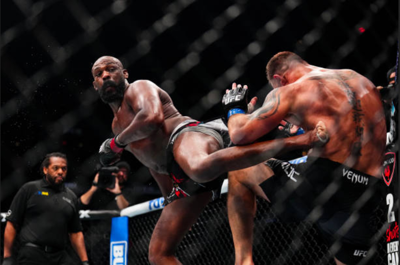
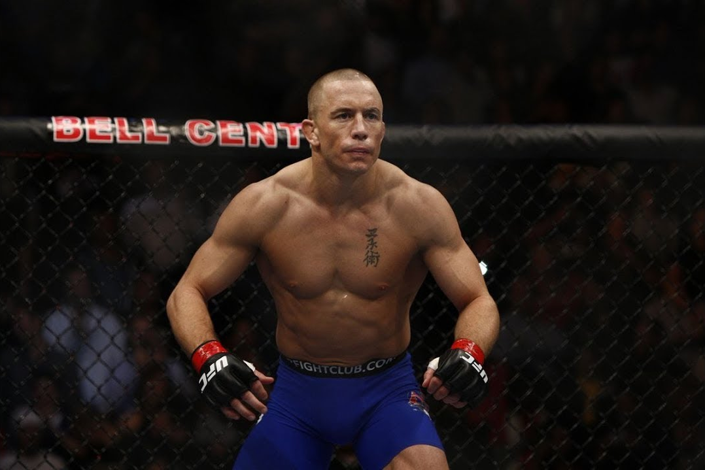

Qu'est-ce que le MMA ?
Le MMA, ou **Mixed Martial Arts**, est un sport de combat complet combinant des techniques de diverses disciplines comme la boxe, le jiu-jitsu brésilien, le kick-boxing, la lutte et le judo.
Le MMA se déroule dans une cage ou un ring, et les combattants s'affrontent en utilisant des frappes, des projections et des techniques de soumission.
Il est devenu mondialement célèbre grâce à des organisations comme l'UFC (Ultimate Fighting Championship).
Combattants légendaires
Fedor Emelianenko

Fedor Emelianenko, surnommé "The Last Emperor", est considéré comme l'un des plus grands poids lourds de l'histoire du MMA.
Originaire de Russie, il a dominé le sport dans les années 2000 avec des victoires mémorables au sein de l'organisation PRIDE.
Sa polyvalence et son calme impressionnant dans l'octogone font de lui une légende vivante.
Jon Jones

Jon "Bones" Jones est l'un des combattants les plus talentueux et controversés du MMA.
Multiple champion des poids mi-lourds de l'UFC, il est connu pour sa créativité, ses frappes imprévisibles et ses combats légendaires contre des adversaires comme Daniel Cormier.
Avec une envergure incroyable et une technique hors du commun, il reste une figure incontournable du MMA.
Georges St-Pierre (GSP)

Georges St-Pierre, ou GSP, est un combattant canadien considéré comme l'un des meilleurs poids mi-moyens de tous les temps.
Il a dominé sa catégorie à l'UFC grâce à son intelligence tactique, son incroyable condition physique et sa maîtrise des techniques de lutte.
GSP est admiré pour son respect envers ses adversaires et sa philosophie du combat.